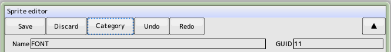

back to the original page
back to the original page
Common Operation
Common features of the part edit window

- Save
Close the window with your edits reflected in the project. No saving to disk
- Cancel
Cancel your edits and close the window
- Category editing
Category editing Display the window
- Undo
Editing content back one step. A total of 32 steps
- Reduce
Undo the undo
- ▲
Edit window is docked or un-docked to the project window and The following is an example.
- Name
Part name, no impact on the game
- Identification ID
Assigned by the system. Cannot be changed
Back to the top of the page